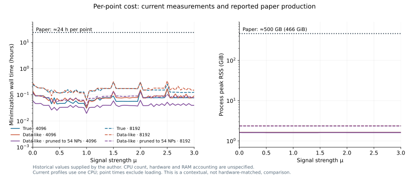

The generating point
θA is a minimum
A global likelihood maximum under the positivity and auxiliary-likelihood conditions; uniqueness is not required.
H* → ZZ → 4ℓ · a structured summary
Same-sample normalization, a RooFit implementation,
and six validated off-shell likelihood scans.
Exact finite-sample closure and its conditions.
02The RooFit modelNative likelihood, shared normalizers and usage examples.
03The resultsSix scans, nuisance pulls and source uncertainties.
04The computing costWall time, CPU and memory at every μ.
4,096 / 8,192 reference events · μ = 0, 0.05, …, 3 · 366 independently validated scan points.
01 / Finite Asimov inference
Normalize and generate on the same finite reference sample.
A global likelihood maximum under the positivity and auxiliary-likelihood conditions; uniqueness is not required.
Standard deviation 0.11 across eight repetitions; large-reference value 3.24.
Exact location does not ensure accurate curvature, tails or simulator agreement.
Lopes de Sa & Sandesara · arXiv:2609.14136 · §2–3. Integration size is distinct from the physical yield and the training-sample size.
01 / Finite Asimov inference
{xi, ui}i=1…M, ∑iui = 1
The same points and reference weights enter every tested parameter value.
Zp(θ) = ∑iui rp(xi; θ)
r̃p = rp / Zp
Require finite, nonzero Zp.
Ii(θ) = ∑pCp(θ) r̃pi(θ)
ai = ui Ii(θA)
∑iuiIi(θ) = Λ(θ)
Keep ai fixed. Generate CR counts and auxiliary observations consistently at θA.
Lopes de Sa & Sandesara · arXiv:2609.14136 · Eqs. (4)–(6). Cp denotes the physical coefficient; Λ = ∑Cp.
01 / Finite Asimov inference
ti = Ii(θ) / Ii(θA)
NLL(θ) − NLL(θA)
= ∑iai [ti − 1 − log ti] + ΔNLLaux ≥ 0
Positive masses, positive total intensities and auxiliary likelihoods maximized at generation make every term nonnegative.
The full parameter-dependent normalization enters both generation and profiling, including derivatives.
Our 4,096 reference is nonnegative. The 8,192 reference has two negative quadrature weights: the inequality does not apply directly, so its minimum and likelihood are checked numerically.
Lopes de Sa & Sandesara · arXiv:2609.14136 · Theorem 2.1. The sum includes SR and CR observations. Signed component coefficients require a positive combined intensity.
01 / Finite Asimov inference
Nonlinear interpolation can change the finite-sample integral between anchors and when several NPs vary.
Zp(α) = ∑iui r̂pi Vpi(α)
Without complete normalization:
(μ̂, α̂) ≈ (0.635, 0.0106)
With complete normalization:
(μ̂, α̂) = (1, 0)
Ii(μ, α, β) = ∑pCp(μ, α, β) · r̂pi Vpi(α) / Zp(α)
Here the supplied variations contain both shape and rate effects. Full-MC rate modifiers stay in Cp; the normalizer removes only the finite-reference shape integral.
hNDE shape-systematics example · arXiv:2609.30196, §5.5 · The physical coefficients and reference selections in our workspaces remain unchanged.
02 / The native RooFit workspace
r̂p(x) ≈ pp(x) / pref(x)
Nominal predictions and systematic up/down variations.
Store nominal ratios and per-event variation anchors as dataset columns.
Read the stored columns; evaluate interpolation, yield factors and constraints.
obsData_4l_offshell: 2,074 unit-weight SR rows plus three CR count rows. Ten nominal process-ratio columns and 2 × 127 × 10 variation columns.
The common pref(xi) is parameter-independent and cancels from likelihood differences. The fit needs the mixture intensity and expected count.
The serialized graph contains precomputed neural outputs. Profiling does not rerun the neural networks. Simulation provides normalization; observed events only evaluate the likelihood.
Reconstructed from read-only inspection of HZZ_4l_offshell_v2.root; the original production builder was not supplied. Aggregate graph inventory.
02 / The native RooFit workspace
hpi(α) = r̂pi Vpi(α) / Rp(α)
piecewise_interp_p: event-dependent V, code 5.mod_p: integrated rate modifier R, code 4.
Cp = ν0p κp(μ, β) Rp(α)
nfFactor_p combines nominal yield, signal/background scaling and rate systematics.
RooProduct / RooRatioprod_process_p→RooWrapperPdfpdf_process_p→RooAddPdf + CppdfSRUncIi = ∑pCp hpi, ΛSR = ∑pCp
The gg basis uses κS = μ − √μ, κSBI = √μ, κB = 1 − √μ. Coefficients may be signed; the total intensity must remain positive.
Ten SR terms: S, SBI, B; EWB, EWSBI, EWSBI10; qqZZ in three jet bins; ttV. The native wrappers have selfNormalized = true: RooFit trusts the supplied normalization. ROOT 6.34 reference.
02 / The native RooFit workspace
Unbinned ratio likelihood with an extended event-count term.
CR0 / CR1 / CR2: one weighted row each. Uniform one-bin PDFs plus extended yields encode Poisson counts.
Unit-width constraints on α, centered on fixed global observations a. Original data workspace: a = 0.
NLL = ΛSR − ∑i∈SR log Ii
+ ∑c=0…2[Λc − nc log Λc] + ½∑k(αk − ak)² + const.
RooSimultaneous("simPdf", …, cat) selects SR/CR0/CR1/CR2. Each channel shares constraintPdf; the NLL extracts the common constraints once.
Three unconstrained qqZZ factors stay free. Effective 0/1/2-jet scales are β₀, β₀β₁, β₀β₁β₂, with the same factors in the corresponding CRs. The explicit expression was checked against native RooFit likelihood differences.
02 / The native RooFit workspace
Owns the functions, channel PDFs, dataset, parameters and snapshots.
Names the likelihood, observables, 127 α nuisances and 127 global observations.
The file declares μ and the three qqZZ factors in its POI set. In this study, only μ is scanned; the qqZZ factors are always profiled.
import ROOT
source = ROOT.TFile.Open("HZZ_4l_offshell_v2.root", "READ")
w = source.Get("combined")
mc = w.obj("ModelConfig_4l_offshell")
data = w.data("obsData_4l_offshell")
nll = mc.GetPdf().createNLL(data,
ROOT.RooFit.Extended(True),
ROOT.RooFit.Constrain(mc.GetNuisanceParameters()),
ROOT.RooFit.GlobalObservables(mc.GetGlobalObservables()),
ROOT.RooFit.GlobalObservablesSource("model"),
ROOT.RooFit.EvalBackend("cpu"))Finite-reference Asimov adaptation: r̂V / R → r̂V / Z(α)
Keep Cp, CRs and constraints consistent with generation. This is where RooSameSampleNormalizer enters.
The original observed workspace remains unchanged; its global fit gave μ̂ = 0.87314. Data-like Asimov generation adopts only its fitted NPs, with μA = 1. Keep the source TFile open while using the workspace.
02 / RooSameSampleNormalizer
Stored once and serialized in the workspace.
Zp(α) = ∑iui r̂pi Vpi(α)
r̂pi Vpi / Zp
α parameters are RooFit servers. The node is independent of event observables, μ and free qqZZ factors.
Shared across events. Cached factors update when NPs change; numerical derivatives still include Z(α).
Code-5 polynomial/exponential interpolation, nominal value 1, positive anchors, boundary ±1.
Ten connected normalizers in every current workspace. Class documentation and implementation.
02 / RooSameSampleNormalizer
# In the standalone demo checkout, with the chosen ROOT active:
# python normalizer/build.py --output build/normalizer
import ROOT
assert ROOT.gSystem.Load(
"build/normalizer/libRooSameSampleNormalizer.so") >= 0
source = ROOT.TFile.Open("HZZ_4l_data_like_asimov_4096.root", "READ")
w = source.Get("combined")
w.loadSnapshot("asimov_generation")
z = w.function("reference_Z_S")
print(z.getVal(), z.directValue())ROOT ≥ 6.34.04 with RooFit. Build the library and dictionary in the runtime used for fitting.
Keep the TFile open while using the workspace. Its reference arrays are embedded; no .npy sidecars are needed.
getVal() uses the cache. directValue() recomputes the integral with ROOT interpolation for checks.
02 / RooSameSampleNormalizer
alpha = ROOT.RooRealVar("alpha", "shape NP", 0., -3., 3.)
vec = ROOT.std.vector("double")
z = ROOT.RooSameSampleNormalizer(
"Z", "same-reference integral", ROOT.RooArgList(alpha),
vec([0.4, 0.6]), # u * nominal ratio
vec([0.9, 1.1]), # down anchors
vec([1.2, 0.8])) # up anchors
alpha.setVal(1.)
print(z.getVal()) # 0.96For K nuisances and N events, flatten anchor arrays in nuisance-major order: index = kN + i. Keep reference and Asimov weights distinct.
Download the executable example · Checked at both anchors, an interior point and after cache updates with ROOT 6.34.10.
03 / Off-shell results
| Model at each size | Generating μ | Generating α / qqZZ | Floating constrained NPs |
|---|---|---|---|
| True Asimov | 1 | 0 / 1 | 127 |
| Data-like Asimov | 1 | Observed-data best fit | 127 |
| Data-like, pruned | 1 | Observed-data best fit | 54 |
Each subset has its own normalization. Full physical yields are retained. The same 54-NP pruning selection is used at both sizes.
The pruned model fixes 73 other NPs at their injected values. CR counts and auxiliary centers match each generating point.
Scan μ = 0, 0.05, …, 3: 61 points per model. q(μ) = 2[NLLprofile(μ) − NLLglobal]. The continuous fitted baseline and published HEPData values are retained.
All 366 coordinates passed convergence, positivity and independent likelihood checks. The following six comparisons use HEPData Table 2, Exp NSBI (4ℓ, stat+syst).
03 / Nuisance and uncertainty diagnostics
Original nominal: fitted α and injected data-fit αA, in original unit-σ coordinates.
Asimov center: α̂ − αA. These pulls should be near zero. qqZZ factors have no Gaussian pull.
V = H−1
Δμ̂k = Vμαₖ Δak
σ²μ,k = V²μαₖ
Unit Gaussian auxiliaries; all three qqZZ factors remain in V.
σ²μ,SR/CR ≈ ∑iai [∇log Ii · V:μ]2
Local source responses differ from conditional NP impacts Vμα/σα. Source and Hesse totals are reported separately. The 8,192 result uses signed quadrature, retaining both negative integration terms.
Covariance source propagation · arXiv:2608.15312 · 4,096: validated covariance reused for the identical model/optimum. 8,192: new full Hesse and independent checks. These are not asymmetric profile intervals.
04 / Computing cost

Historical benchmark confirmed by the author for one profiled μ point. Historical CPU count, hardware and RAM accounting are unspecified. Current points use one CPU; measured point time excludes loading. 500 GB ≈ 466 GiB. This is not a controlled hardware-matched comparison.
04 / Computing cost
| Model | Median point wall (min) | Minimizer CPU (h, all 66) | Whole-job CPU (h) | Scan elapsed (h) | Max job RSS (GiB) |
|---|
Overlapping chunk boundaries provide checks. Aggregate costs include all 66 completed profiles per model and whole-job accounting without double-counting steps.
Per-point curves use process high-water marks. This table uses the largest Slurm job-step MaxRSS; neither sums concurrent workers.
Scan elapsed time runs from first chunk start to final chunk finish, including scheduling gaps, with up to four concurrent chunks per model. Global fits, final validation and separate Hesse work are excluded. Full table · 36 Slurm jobs · All 396 computed profiles.
Reproducibility
Figures and CSVs are frozen results, not live cluster queries. Original workspaces, scan baselines and the chronological presentation remain preserved. Four adjacent figure slots are reserved for the paper comparisons.